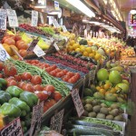
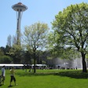
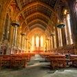
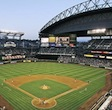
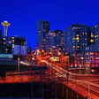
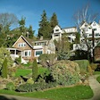

Since most of you will be traveling to Seattle, many for the first time, we’ve listed some of our recommended local activities below. We’ve only included a few of our favorites here, so please feel free to ask us about anything and we can also provide some more personalized recommendations.
Transportation
Once you arrive at Sea-Tac Airport, there are several ways to get to downtown Seattle, all of which are pretty easy and cheap!
The best/cheapest method we recommend is to take Link Right Rail, a train that goes straight to the heart of downtown in about 45 minutes. The train comes every 10 minutes, and the station connected to the airport. It’s a bit of a walk past the parking deck, but just keep following the sings. It only costs $2 and you can guy a ticket at the vending machine at the station.
If you’d rather take a taxi to Seattle, it will cost about $40. Credit card is available, and you can use International credit cards as well (日本で作ったビザ／マスターカードのクレジットカードはアメリカでも使えます）.
You also might want to double check with the hotel where you’ll be staying; sometimes hotels provide shuttle for guests.
Yuka is going to the airport on Thursday, July 11th to pick up her family, so if you are there around that time, you can get Yuka’s help as well!
Pike Place Market
|  |
Pike Place Market is a very popular public market just a ten-minute walk from our home.
We love to go there on weekends to wander around and pick up some lunch and groceries. It’s always packed in the summer, but it’s a great place to get local fish and vegetables and there are lots of interesting stores.
The market has the original Starbucks (no seating!), a fantastic French bakery called “Le Panier”, really good restaurants like “Seatown Sea Bar” by Seattle’s famous chef Tom Douglas, and “Matt in the Market”. If you would like to enjoy local Seattle food, this is the place you want. |
Seattle Center
|  |
The Space Needle, the symbol of the City of Seattle, is located in a beautiful park, the Seattle Center. The park contains a number of museums, a sports arena, a fountain, and many buildings that host different events. In the winter, we always enjoy the temporary ice skating rink here. The are lots of activities around the Seattle Center, especially in the summer, and then the Space Needle at sunset is wonderful. And if you’d like, you can also enjoy dinner at the rotating restaurant at the top of the needle.
Since the Seattle Center is one of the famous tourist spots, you can find a lot of nice cafés around this area, such as Café Zingaro, Café Vita, Café Ladro, Street Bean Espresso, and more! |
University of Washington
|  |
The University of Washington is the largest University in the Pacific Northwest, and it’s also known for its beautiful campus. Yuka studied and taught here from Autumn 2011 to Summer 2013. One of the famous buildings here is Suzzallo library, beautiful library with lots of stained glass and an old-world feel. They often film movies and TV shows here. |
Safeco Field
|  |
Safeco Field is the Seattle Mariners home stadium. Ichiro is no longer here in Seattle, but the baseball games are still exciting, especially here in Safeco Field! For those of you who are flying in from Japan/outside of US, you should visit here. The atmosphere is very different from that of Japanese baseball games. You can buy food from people that will throw it to you, the audience makes waves and sing songs, and no one ever minds the rain. Rather than being serious towards the game, lots of fun is going on in this famous American ball field! |
Belltown
|  |
If you want to enjoy night life in Seattle, you should come to Belltown where Alan lived the past two years. Almost every single restaurant in Belltown has Happy hour, of course drinks, but also small portions of good food. Some of our favorite restaurants in this area are WASABI, Rob Roy (Bar), Local 360 (American), Branzino (Italian), Yellow Leaf Cupcake, Serious Pie (Pizza), etc! |
Queen Anne
|  |
When you climb up the steep hill, which you can see from the Seattle Center area, you will see this cute little neighborhood, Queen Anne. Yuka used to live along the main street, Queen Anne Avenue. Queen Anne is known for cute little bakeries, cafés, and dessert shops as well as gorgeous houses and views. There are also a lot of beautiful parks too, in addition to our ceremony location, Parsons Garden. Yuka used to enjoy running in this area a lot. Queen Anne is the one of our favorite neighborhoods in the whole Seattle area. |
Museum of Flight
|
The Museum of Flight is a bit south of Seattle and it takes a short drive to get there, but it’s a fun place to spend an afternoon if you have some extra time. You can try out the cockpit of an SR-71 Blackbird, take a tour of Kennedy’s Airforce One, and see how Boeing’s factories looked back when planes were made by hand. |